2 The Measure of Time
2.1 Big Idea
One of the weirder things in our understanding of the universe is that time flows in only one direction. This “arrow of time” creates some wrinkles in how we handle time-series data.
2.2 Reading
Have a look at Chapter one (through section 1.4) from Cowpertwait and Metcalfe (2009). It’s OK to skim the readings in this book. It’s not a great text for our purposes as many of you haven’t taken linear algebra and the book occasionally goes that way. But it’s useful to hum your way through the chapter nonetheless.
2.3 Packages
2.3.1 Load
We will use the tidyverse (Wickham 2023), zoo (Zeileis, Grothendieck, and Ryan 2025), and broom (Robinson, Hayes, and Couch 2025). Install them if you haven’t done so already (e.g.,: install.packages(c("tidyverse", "zoo"))).
2.3.2 Keep Up to Date
It’s important that you are (reasonably) current in your R and RStudio installations. That goes for packages too. Here are the versions of the packages above that are loaded when this page was knit.
## [1] '2.0.0'## [1] '1.8.14'Get in the habit of updating packages regularly. A good way of doing that is via update.packages(). Because I’m usually content to let R update everything semi-automatically I usually run that as update.packages(ask = FALSE, type = "binary") from a fresh R session. Fresh here means that don’t have packages already loaded – e.g., go to Session | Restart R in Rstudio. Running that regularly (I do it every week, but I’m a pretty heavy user) is a very good idea. You can also click the little update button under the pacakges in RStudio if you prefer that kind of interaction.
2.4 What Kinds of Data?
So weirdly enough we have to ask, what is a time series? My default place for answers for non-controversial things is Wikipedia, “A time series is a series of data points indexed in time order. Most commonly, a time series is a sequence taken at successive equally spaced points in time.”
OK. That’s actually perfect for our purposes. It has some key aspects that we should consider. First, the data are in a series meaning they come one after another. Second, they are indexed in time. Third, the data are typically at regularly spaced intervals of time.1
We will refer to a time series \(y\) measured/observed at time \(t\) as \(y_t\). For regular time series \(t\) is the index of the time (e.g., year, day, second, etc.) so that \(t_i - t_{i-1} = 1\). More formally, we treat \(y_t\) as random variable that is a realization of a process at time \(t\) so that \(\{y_t,t \in T \}\).
This is all straightforward. The confusing part in getting started with working with time series is often figuring out how to tell the computer about how the indexing is done. Are the data measured at arbitrary time steps? Does the index refer to actual dates and times? If so, how do we deal with leap days? Or time zones? And how do computers even store these kinds of data?
2.5 The ts Class
2.5.1 A Very Useful Class
As you know R has a lot of of onboard data sets. You can take a look at the data sets package to get an idea of what’s easy to grab. But you can also look at the time-series packages (like my package dplR) many of which have data available as well. We’ll also work with data we can read into R from an online source or via a text file of some sort. The options are, for almost any reasonable definition, infinite. Let’s start with two onboard data sets.
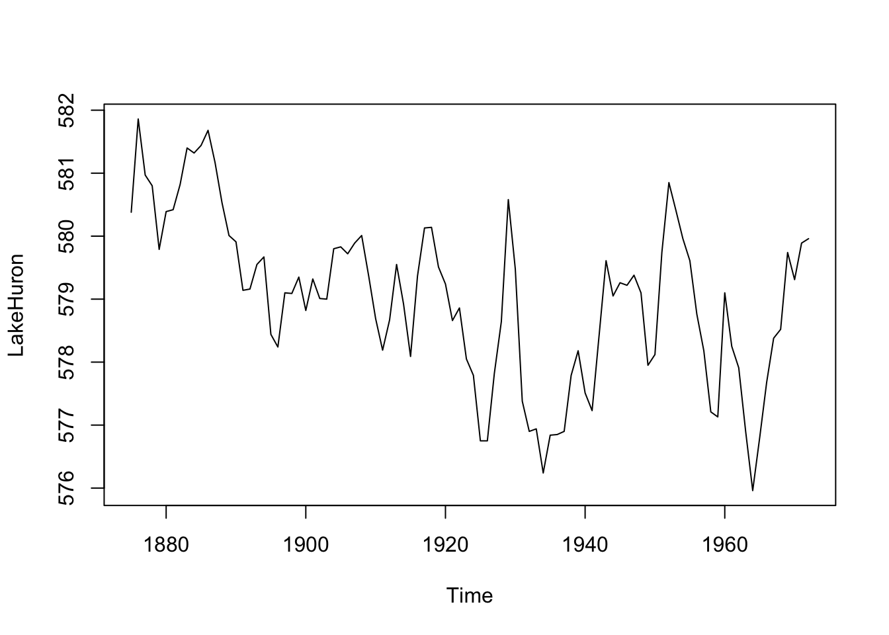
OK, what’s going on here? We loaded a data set of the level of Lake Huron (in feet) from 1875 to 1972, made a plot, and looked at some summary statistics. You can look at the help page for the data via ?LakeHuron.
R knows this is a time series – the class of the object LakeHuron is class ts which is one of the ways we will work with time-series data.
## [1] "ts"Look at the help page for ts to understand what that structure looks like. The most important thing to understand is that the time values are attributes and not, say, a stand-alone column of times next to the data the way you might do it in Excel. Because this is a regular time series, the object just has data values (the lake height in feet). The index of time values isn’t stored row-by-row the way you might keep them in a spreadsheet. Rather, the index is calculated dynamically using start, end and frequency values stored as attributes. We can see these using the very handy tsp function.
## [1] 1875 1972 1This tells us the start time, end time, and frequency of the data. The LakeHuron time series starts in the year 1875 and runs until 1972 with one observation per year. Before we go on, note that there are several methods for working with this class (like plotting). Recall that classes with methods can have shortcuts to commonly used functions. For instance, calling plot(LakeHuron) is the same as calling plot.ts(LakeHuron) because the ts class has a plot method. We will talk more about this later but you can see all of the methods that are in the ts class via methods(class="ts").
Let’s look at another data set:
## Time-Series [1:468] from 1959 to 1998: 315 316 316 318 318 ...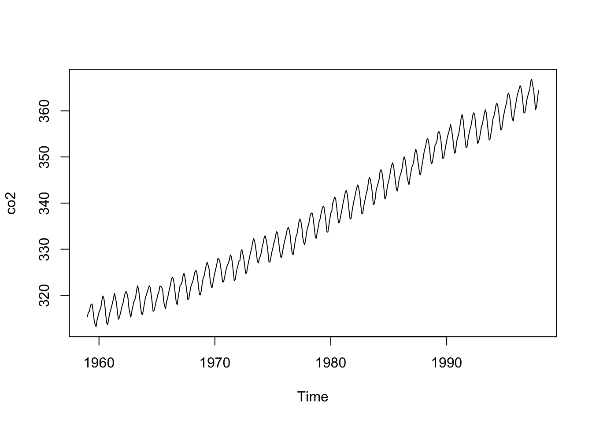
These data are monthly and run from 1959 to 1998. From a purely practical standpoint you should make sure that you and R agree on the time-series properties of a data set. For instance, you should know the start and end times and the frequency (the number of observations per unit of time). Before you go further, can you predict what the output will be when you run tsp(co2)?
To look under the hood further and get an idea of how these objects exist in R run attributes(co2) and class(co2).
2.5.2 Digression: Describing a Time Series
We’ve been focusing on the time-series qualities of the data (e.g., the index). But we can also treat these data they way we would other data. That is, when working with a time series you should be able to describe it the same way you’d describe any data. The summary function is most useful but I like to know things like the standard deviation too. And I like diagnostic plots like boxplots and histograms. Recall that time-series data are most importantly data and you should always explore your data thoroughly with descriptive statistics and plots.
We will learn more techniques that are specific to time series (e.g., autocorrelation) later. But first, let’s plot a histogram of the Lake Huron data, overlay a normal curve, and look at the shape. This is a moderately involved bit of plotting but you can step through it bit by bit. I’ll go old school here with some base graphics.
my.xlim <- range(LakeHuron)
h<-hist(LakeHuron, breaks=10, col="lightblue", xlab="Lake Level (ft)",
main="",xlim=my.xlim)
xfit <- seq(min(LakeHuron),max(LakeHuron),length=100)
yfit <- dnorm(xfit,mean=mean(LakeHuron),sd=sd(LakeHuron))
yfit <- yfit*diff(h$mids[1:2])*length(LakeHuron)
lines(xfit, yfit, col="darkblue", lwd=2)
boxplot(LakeHuron, horizontal=TRUE, outline=TRUE, axes=FALSE,
ylim=my.xlim, col = "lightgreen", add = TRUE, boxwex=3)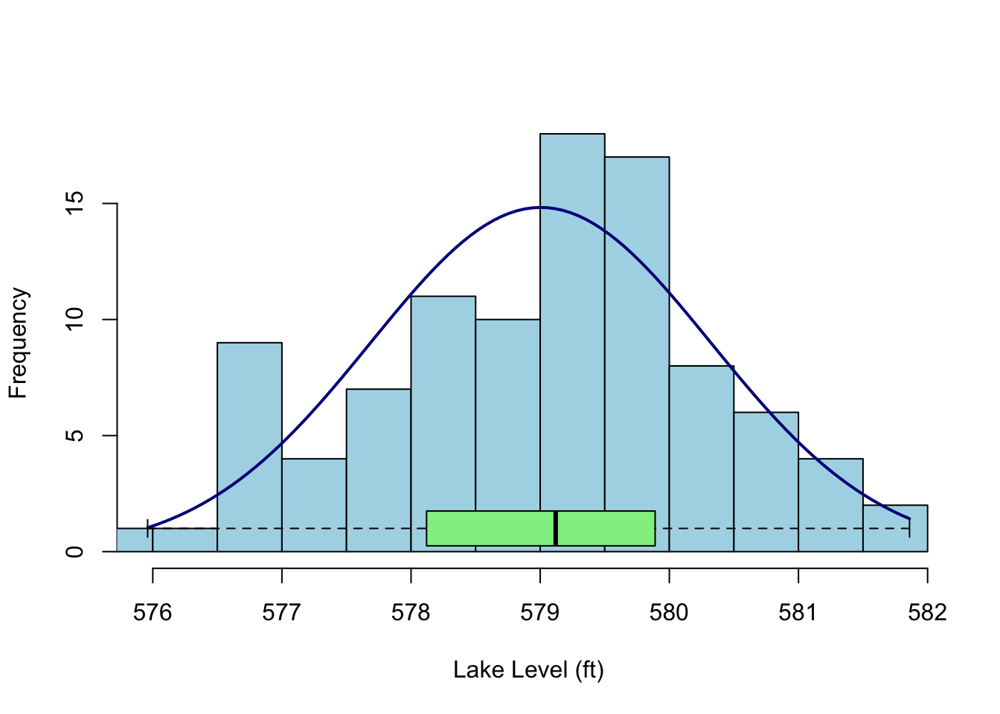
Given a sample size of less than 100, these data don’t show much kurtosis or skew and in fact look pretty normal. That is, I wouldn’t say they were platykurtic or negatively skewed as compared to a random expectation. How could I test such a thing? Well, there are tests in the moments package (e.g., agostino.test(LakeHuron), anscombe.test(LakeHuron), jarque.test(c(LakeHuron)) or we could use some kind of resampling method (e.g., bootstrapping). But here is where we get to the single most important mantra I have when working with data: plot and explore it. Plot your data. Plot your data. Plot your data. Statistical significance is like pornography (to steal from United States Supreme Court Justice Potter Stewart), you know it when you see it.
There are other plots I like to make when exploring data. I’m partial to plotting the cumulative distribution function (take a look at ecdf) and maybe a normal QQ plot (qqnorm) but we can leave it here for the time being. Just remember: Plot your data.
2.5.3 More on the ts Index
Let’s go back to the LakeHuron data. We think of these data as annual with the time index in years. But the ts class itself just thinks in terms of start, end, and frequency. It’s a simple system but not always what you want – in fact ts with a frequency of one isn’t really in years. From the help page for ts:
The value of argument frequency is used when the series is sampled an integral number of times in each unit time interval. For example, one could use a value of 7 for frequency when the data are sampled daily, and the natural time period is a week, or 12 when the data are sampled monthly and the natural time period is a year. Values of 4 and 12 are assumed in (e.g.) print methods to imply a quarterly and monthly series respectively.
## Time Series:
## Start = 1875
## End = 1972
## Frequency = 1
## [1] 1875 1876 1877 1878 1879 1880 1881 1882 1883 1884 1885 1886 1887 1888 1889
## [16] 1890 1891 1892 1893 1894 1895 1896 1897 1898 1899 1900 1901 1902 1903 1904
## [31] 1905 1906 1907 1908 1909 1910 1911 1912 1913 1914 1915 1916 1917 1918 1919
## [46] 1920 1921 1922 1923 1924 1925 1926 1927 1928 1929 1930 1931 1932 1933 1934
## [61] 1935 1936 1937 1938 1939 1940 1941 1942 1943 1944 1945 1946 1947 1948 1949
## [76] 1950 1951 1952 1953 1954 1955 1956 1957 1958 1959 1960 1961 1962 1963 1964
## [91] 1965 1966 1967 1968 1969 1970 1971 1972The times in the ts class aren’t really related to reality. Run the code below and then use time(foo) for each line to look at what ‘times’ you created.
n <- 100
# Annual data starting in the year 2000
foo <- ts(rnorm(n),start=2000,frequency = 1) #time(foo)
# 100 months starting in the year 2000
foo <- ts(rnorm(n),start=2000,frequency = 12) #time(foo)
# quarterly data
foo <- ts(rnorm(n),start=2000,frequency = 4) #time(foo)
# less than one year of daily data
foo <- ts(rnorm(n),start=2000,frequency = 365) #time(foo)
# decades!
foo <- ts(rnorm(n),start=2000,frequency = 0.1) #time(foo)
# hours!
foo <- ts(rnorm(n),start=2000,frequency = 365*24) #time(foo)We are definitely going to want to use time series with real dates and times. What if you have data that are hourly and start on January 3, 2021 at 1:01AM PST? Can you coerce that into the ts class? Well, maybe but it’s not intuitive and there are better ways in R of doing this. The ts class is only one of the ways that R deals with time series (say hello zoo library!). The ts class very simple but not great for dates and times of day. As you work with other data you’ll encounter some of the other ways that R stores times and dates. Trying to understand these can get tricky very fast. Consider all the things you have to account for with calendar data. Leap years (leap seconds!), time zones, daylight savings, and so on. You can look at the help page for Date and DateTime to get started but in reality you’ll be better off searching the internet for explanations of how time is accounted for in R. And ultimately you just have to dive in. This is not an issue that is specific to R. It’s a devilish problem for every computer platform that is not unlike dealing with projections in GIS. I’m going to be as gentle as possible about it but I know that we’ll get stumped soon. The lubridate package is exciting as a way of making working with time-series data more pleasant. The package promises to make “working with dates fun instead of frustrating.” That would be nice.
2.6 Trend in time
One of the most common things to do with a time series is to fit a linear model and see if there is a trend in the data as a function of time. Note that later in class we will worry about how to do this in a way that allows us to test the significance of the trend in a responsible way but for now let’s get a slope on the Lake Huron data. Were lake levels increasing or decreasing over those years?
##
## Call:
## lm(formula = LakeHuron ~ time(LakeHuron))
##
## Coefficients:
## (Intercept) time(LakeHuron)
## 625.5549 -0.0242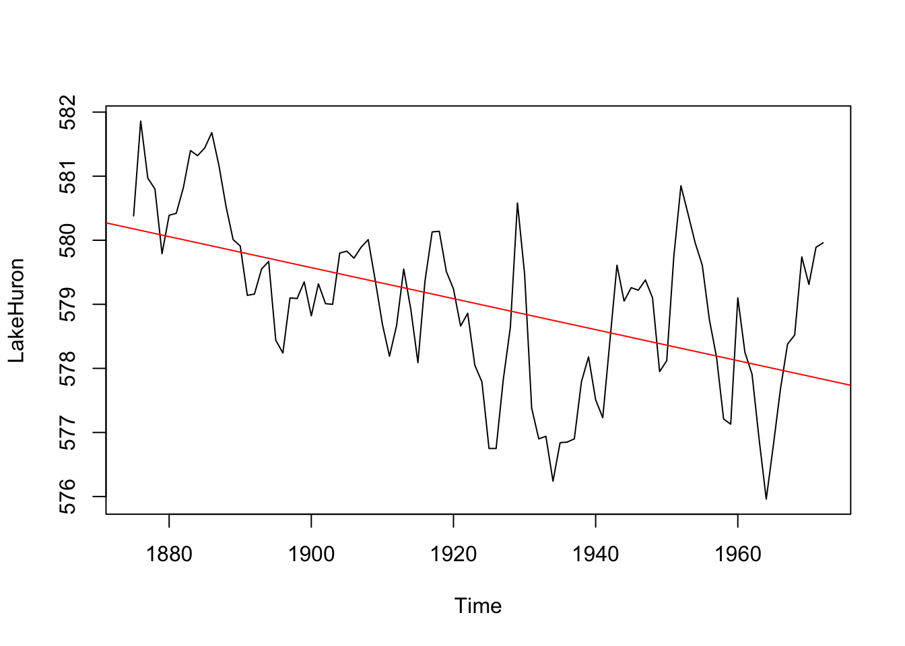
We can see that how lake levels are changing at a rate of -0.02 feet per year.
2.7 The zoo Class
When you have run up against the limitations of the ts class it’s time to visit the zoo. Let’s look at using the zoo library to work with time series. When I have dates and times that is the package I tend to use.
Let’s look at the list of the vignettes in zoo.
I suggest perusing these. E.g., vignette(topic="zoo", package="zoo").
Now to work. I have compiled weather data from the Bellingham Airport using the GSODR package.
Run str, summary, and head on them to what this object is all about see. E.g.,
## 'zoo' series from 2000-01-01 to 2024-12-31
## Data: num [1:9131, 1:2] 5.3 3.6 1.1 7.6 5.1 3.7 5.2 7.2 4.3 2.6 ...
## - attr(*, "dimnames")=List of 2
## ..$ : NULL
## ..$ : chr [1:2] "TEMP" "PRCP"
## Index: Date[1:9131], format: "2000-01-01" "2000-01-02" "2000-01-03" "2000-01-04" "2000-01-05" ...## Index TEMP PRCP
## Min. :2000-01-01 Min. :-12.80 Min. : 0.000
## 1st Qu.:2006-04-02 1st Qu.: 6.40 1st Qu.: 0.000
## Median :2012-07-02 Median : 10.40 Median : 0.000
## Mean :2012-07-01 Mean : 10.36 Mean : 2.389
## 3rd Qu.:2018-10-01 3rd Qu.: 15.00 3rd Qu.: 2.290
## Max. :2024-12-31 Max. : 28.00 Max. :87.880## TEMP PRCP
## 2000-01-01 5.3 1.219000e+01
## 2000-01-02 3.6 1.270000e+00
## 2000-01-03 1.1 1.270000e+00
## 2000-01-04 7.6 8.890000e+00
## 2000-01-05 5.1 5.100000e-01
## 2000-01-06 3.7 1.110223e-15OK. What have we learned? The object kbli is class zoo the time index is a Date, there are two columns of data (precipitation and temperature) and therefore we refer to this as a multivariate time series. Let’s do some plotting with the built in plot function for zoo
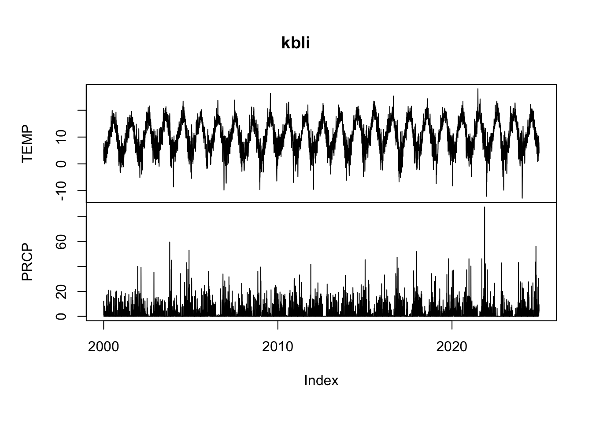
And look at some precip data with window. This is the 2024 water year.
plot(window(kbli$PRCP, start = as.Date("2023-11-01"),
end = as.Date("2024-10-31")), ylab="Precip (mm)")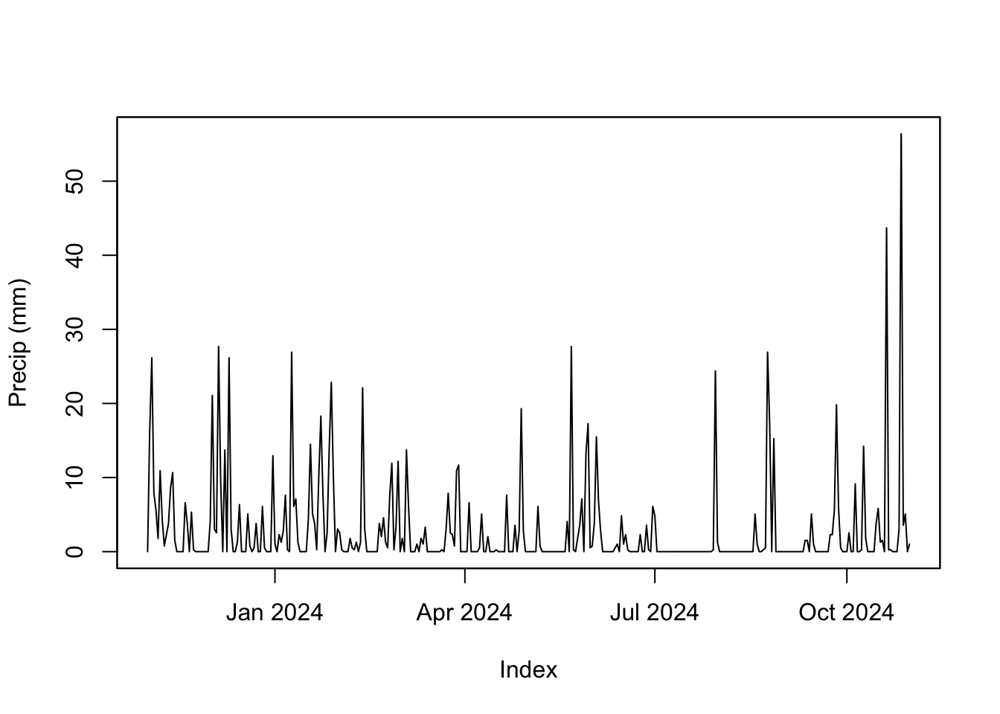
Reminder, this is a zoo object and so R uses plot.zoo to do the actual plotting even though you just type plot. Same goes for window.
The important distinction here is that unlike class ts, the times are actual dates and not an arbitrary index like we had with the LakeHuron data. The times are stored as class Date which is a good class for dates without times. If we had more finely resolved data we might want a different class like POSIXlt or POSIXct. Peruse the help file for Date-Time Classes via ?DateTimeClasses.
2.8 Lubricate the Dates
The package lubridate has some nifty functions for working with dates and times. There is one very nice vignette to look at and I suggest perusing it via vignette(topic="lubridate",package="lubridate").
For instance, you can grab the month for each observation in kbli via month(kbli) which might come in handy for pulling out just the summer months.
Or you might want to convert all the dates to decimal dates (which are just plain numbers) and use that to make a tibble.
kbliDD <- decimal_date(kbli)
temp_tb <- tibble(decimalDate = kbliDD, TEMP = as.vector(kbli$TEMP))
temp_tb %>% ggplot(mapping = aes(x=decimalDate,y=TEMP)) +
geom_line() +
labs(x="Date",y=expression(degree~C),
title="Average Daily Temperature, Bellingham WA") +
theme_minimal()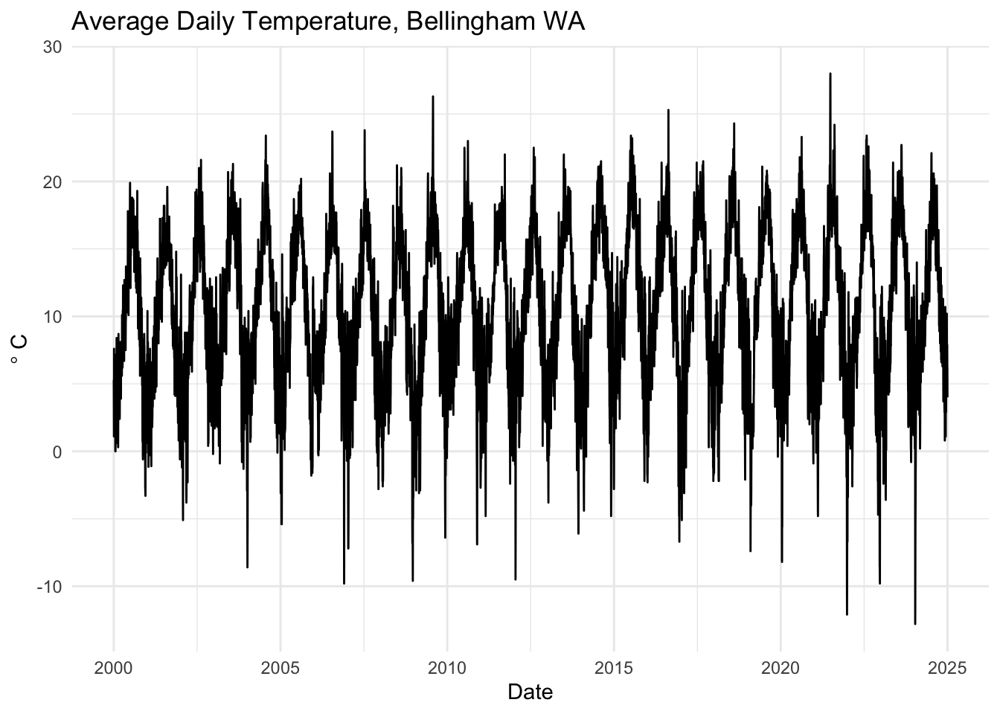
Most often I use lubridate for making date and time objects from characters or decimal dates. E.g., date_decimal(kbliDD) would go back to a date from the numbers. Or if you had characters of dates like “2009-02-10” you could make that a date via ymd("2009-02-10"). You will encounter dates in an Excel spreadsheet at some point. And when that happens, even the most religious of people will declare that there is no god. Remember that lubridate can help.
2.9 Tidy it Up
We can also work with these objects in the tidyverse but we need to convert the zoo object into a tibble. There are a few ways of doing this (e.g., like the example above) but the tidy function from broom does a nice job of making a long tibble from a zoo object. Note that I’m not loading the whole broom library here but just grabbing the function tidy.
## Rows: 18,262
## Columns: 3
## $ index <date> 2000-01-01, 2000-01-01, 2000-01-02, 2000-01-02, 2000-01-03, 20…
## $ series <chr> "TEMP", "PRCP", "TEMP", "PRCP", "TEMP", "PRCP", "TEMP", "PRCP",…
## $ value <dbl> 5.300000e+00, 1.219000e+01, 3.600000e+00, 1.270000e+00, 1.10000…This is similar to what we did above. And like the above, we can now treat this like any other tibble.
kbli_tb %>%
mutate(series = recode(series,
PRCP = "Precipitation (mm)",
TEMP = "Temperature (C)")) %>%
ggplot(mapping = aes(x=index,y=value)) +
geom_line() +
facet_wrap(~series,scales = "free_y",ncol=1) +
labs(x="Date",y=element_blank(),
title="Average Temperature and Precipitation, Bellingham WA") +
theme_minimal()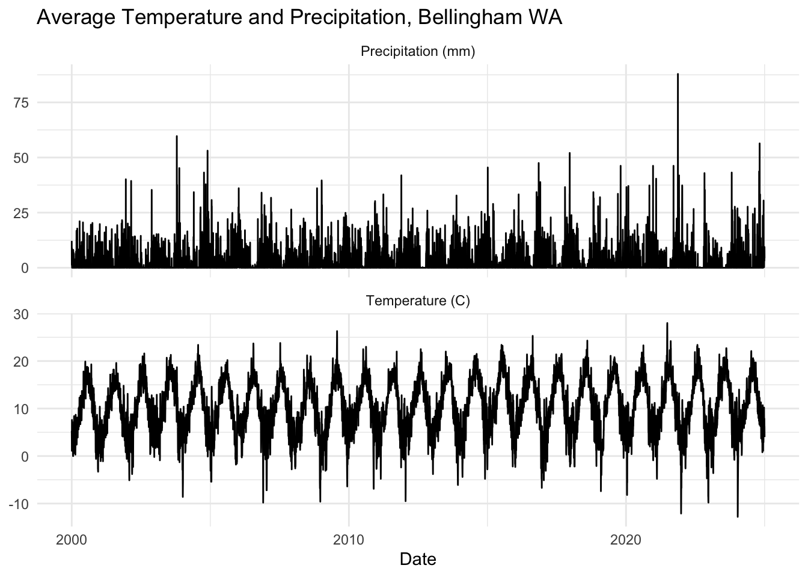
Also note that this works with ts objects as well.
co2_tb <- broom::tidy(co2)
co2_tb %>%
ggplot(mapping = aes(x=index,y=value)) +
geom_line() +
labs(x="Date",y=expression(CO[2]~(ppm)))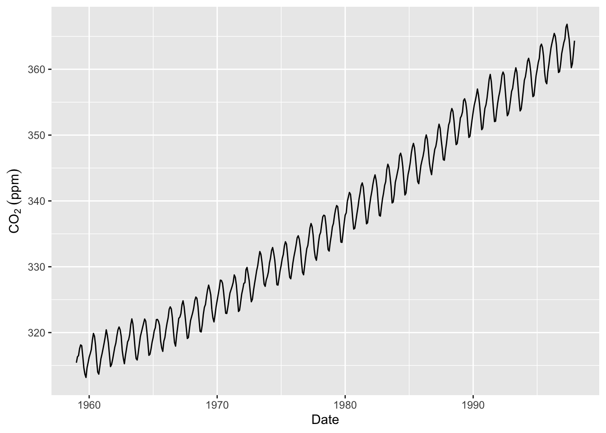
I really hate use base plotting and will probably convert back and forth a good deal. You are welcome to use base plotting (e.g., plot) or ggplot.
2.10 Your Work
That was a lot to deal with. I know. This week, let’s try to get comfortable reading in a time series from the web and working with it as a tibble, ts, and zoo objects.
2.10.1 Berkeley Earth Temperature Data
The data I’ll give you are global temperature anomalies (in degrees C) for land surfaces from the Berkeley Earth group. This is one of the half dozen or so research groups that maintains global climate data sets in real time. “Global Land Only (1750 – Recent)” is the original source and you can read about how the data are created and formatted. This is the important bit from the top of the file:
This file contains a detailed summary of the land-surface average results produced by the Berkeley Averaging method. Temperatures are in Celsius and reported as anomalies relative to the Jan 1951-Dec 1980 average. Uncertainties represent the 95% confidence interval for statistical and spatial undersampling effects.
The time index is monthly and starts in 1750. So the first observation is January 1, 1750.
Let’s go get the data. Below, I’ll download it from the web, save it into a file (that file goes into whatever your working directory is), and then read it.
fname <- "https://berkeley-earth-temperature.s3.us-west-1.amazonaws.com/Global/Complete_TAVG_complete.txt"
download.file(fname, "data/Complete_TAVG_complete.txt")##
## ── Column specification ────────────────────────────────────────────────────────
## cols(
## X1 = col_double(),
## X2 = col_double(),
## X3 = col_double(),
## X4 = col_double(),
## X5 = col_double(),
## X6 = col_double(),
## X7 = col_double(),
## X8 = col_double(),
## X9 = col_double(),
## X10 = col_double(),
## X11 = col_double(),
## X12 = col_double()
## )We will just keep the first three columns of the data which are the year, month, and temperature anomaly.
## Rows: 3,300
## Columns: 3
## $ Year <dbl> 1750, 1750, 1750, 1750, 1750, 1750, 1750, 1750, 1750, 1750, 1750…
## $ Month <dbl> 1, 2, 3, 4, 5, 6, 7, 8, 9, 10, 11, 12, 1, 2, 3, 4, 5, 6, 7, 8, 9…
## $ degC <dbl> -0.252, -1.261, 0.225, 0.288, -0.970, -0.573, 0.390, 0.947, -0.4…I’ll toss out the data prior to 1851 as well. The uncertainty is pretty large before that time because there weren’t a ton of thermometers contributing to this global record prior to the mid-19th century.
## Rows: 2,088
## Columns: 3
## $ Year <dbl> 1851, 1851, 1851, 1851, 1851, 1851, 1851, 1851, 1851, 1851, 1851…
## $ Month <dbl> 1, 2, 3, 4, 5, 6, 7, 8, 9, 10, 11, 12, 1, 2, 3, 4, 5, 6, 7, 8, 9…
## $ degC <dbl> -0.012, -0.618, -1.146, -1.051, -0.299, -0.238, 0.058, -0.277, -…Ok. We have tAnoms which is a standard tibble. This will suit many of our needs but we will need the ts and zoo classes from time to time. So, let’s make ts and zoo objects from the data.
tAnoms_ts <- ts(tAnoms$degC,start=c(1851,1),frequency = 12)
tAnoms_zoo <- zoo(tAnoms$degC,
order.by = as.Date(paste(tAnoms$Year,"-",tAnoms$Month,"-","1",sep="")))Now we have three different objects all containing the same data. We have objects that are class tibble, ts, and zoo. Ideally you will be comfortable working with all three of these objects. E.g., figure out how to plot, summarize the all the objects.
For instance, here is a plot of just August temperatures using each data set. Note how I used month from lubridate in one instance and cycle in another just to show you that there are many different ways of doing things.
tAnoms %>% filter(Month == 8) %>%
ggplot(mapping = aes(x=Year,y=degC)) +
geom_line() +
labs(y=expression(Anomaly~degree*C),
title = "August Temperatures",
caption = "Anomalies relative to the Jan 1951-Dec 1980 average") +
theme_minimal()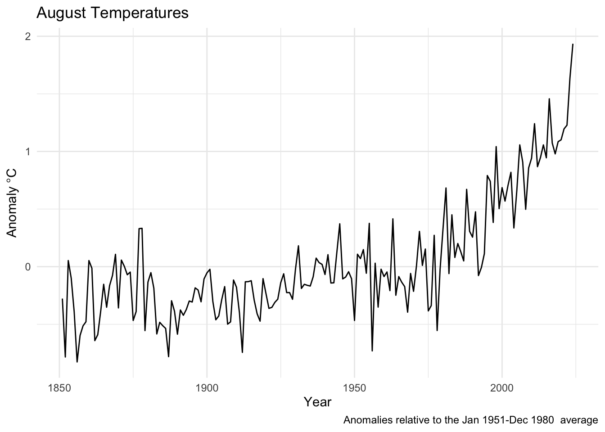
plot(tAnoms_zoo[month(tAnoms_zoo)==8], xlab="Year",ylab=expression(Anomaly~degree*C),
main = "August Temperatures",
sub = "Anomalies relative to the Jan 1951-Dec 1980 average")augtAnoms_ts <- ts(tAnoms_ts[cycle(tAnoms_ts)==8],start=1851)
plot(augtAnoms_ts,
xlab="Year",ylab=expression(Anomaly~degree*C),
main = "August Temperatures",
sub = "Anomalies relative to the Jan 1951-Dec 1980 average")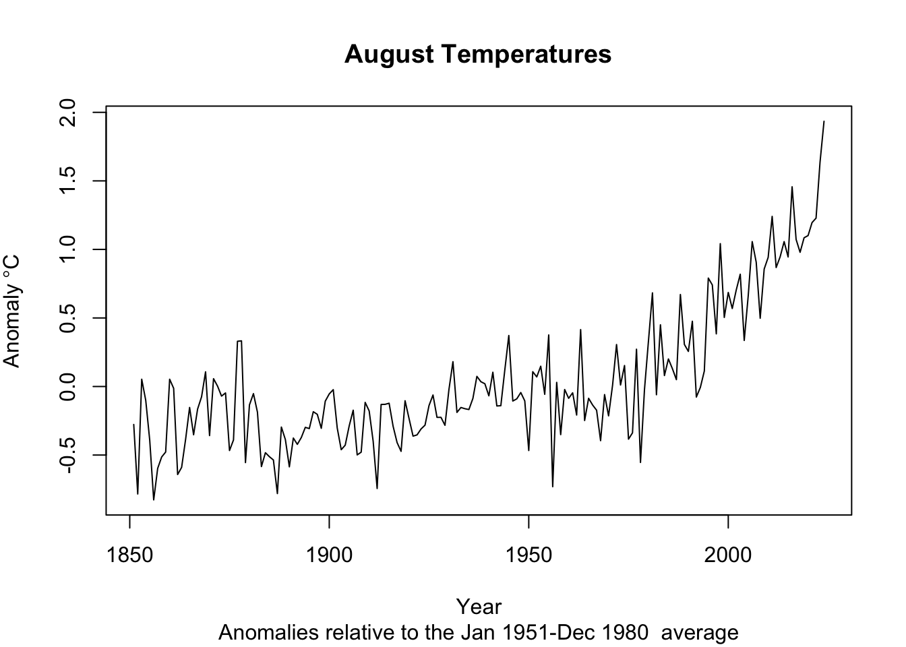
2.10.2 Your Turn
Get somewhat comfy with basic data manipulation. Try to get a feel for how the times are stored in each class. When you are ready, do two things with each class (tibble, ts, and zoo). First, create and plot an annual mean temperature anomaly from the monthly data (e.g., 1851 will have one value that is the average of 12 temperatures from January to December). Second, report the trend in the data using the slope coefficient from a linear model. And if you are feeling spunky, try an optional third step: add a five-year centered moving average to each plot. I want you to do these with each class (tibble, ts, and zoo) because we will encounter all them as we move forward. Your plots, slopes, etc. should look the same for each class.
I’ll start you off by showing one way to take these monthly data and make them annual.
tAnomsAnn <- tAnoms %>% group_by(Year) %>% summarise(degC = mean(degC))
tAnomsAnn_ts <- aggregate.ts(tAnoms_ts, nfrequency = 1, FUN = mean)
tAnomsAnn_zoo <- aggregate(tAnoms_zoo, by = year,FUN = mean)When I fit a linear model I find that the annual trend is 0.01 degrees C per year. That’s a degree per century. Yikes.
I’ve hidden my code, but here is what I came up with in terms of plots.
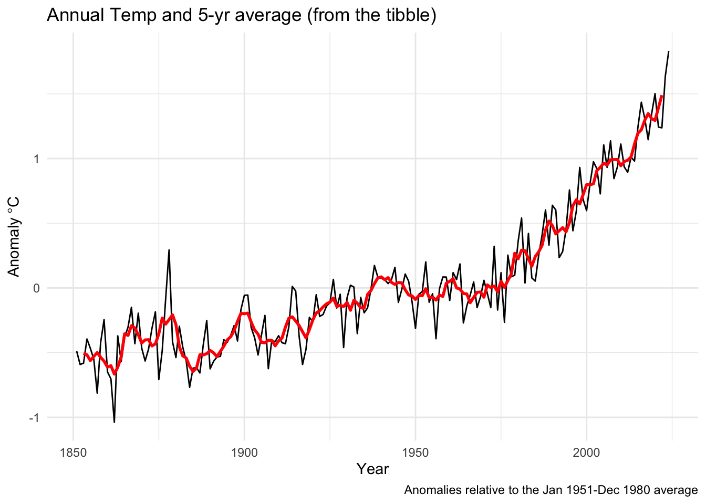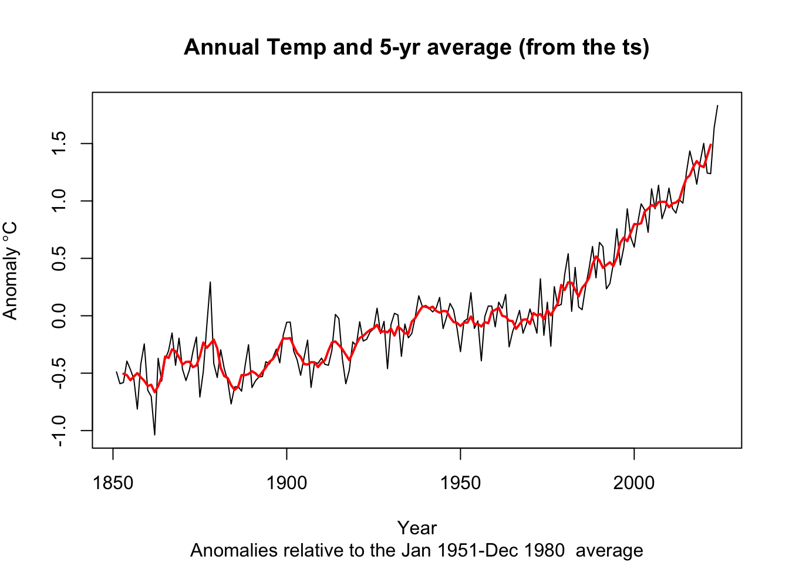
2.10.3 Write Up and Reflect
Pass in a R Markdown doc with those plots. Leave all code visible, although you may quiet messages and warnings if desired. Turn in your knitted html. The last section of your document should include a reflection where you explain how it all went. What triumphs did you have? What is still confusing?
We will consider irregular time series later in the the class but not deal with them too often.↩︎